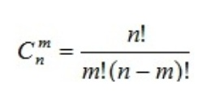
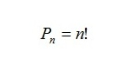

Что такое комбинаторика и кто открыл?
Комбинаторика – раздел математики, который изучает задачи выбора и расположения элементов из некоторого основного множества в соответствии с заданными правилами. Формулы и принципы комбинаторики используются в теории вероятностей для подсчета вероятности случайных событий и, соответственно, получения законов распределения случайных величин. Это, в свою очередь, позволяет исследовать закономерности массовых случайных явлений, что является весьма важным для правильного понимания статистических закономерностей, проявляющихся в природе и технике.
Термин «комбинаторика» был введён Лейбницем, который в 1666 году опубликовал свой труд «Рассуждения о комбинаторном искусстве». Иногда под комбинаторикой понимают более обширный раздел дискретной математики, включающий, в частности, теорию графов.
Главные правила и определения
Правило суммы : Если два действия А и В взаимно исключают друг друга, причем действие А можно выполнить m способами, а В – n способами, то выполнить одно любое из этих действий (либо А, либо В) можно n + m способами.
Правило произведения : Пусть требуется выполнить последовательно k действий. Если первое действие можно выполнить n1 способами, второе действие n2 способами, третье – n3 способами и так до k-го действия, которое можно выполнить nk способами, то все k действий вместе могут быть выполнены:
N = n1 * n2 * n3 * ... * n
Сочетания без / с повторениями:
Сколькими способами можно выбрать m из n различных событий?
Размещения без / с повторениями:
Сколькими способами можно выбрать и разместить по m различным местам m
из n различных способов?
Перестановки без / с повторениями:
Cколькими способами можно разместить n различных предметов на n различных местах?
Факториа́л – функция, определённая на множестве неотрицательных целых чисел.
n! = 1 * 2 * … * n
Задачи: